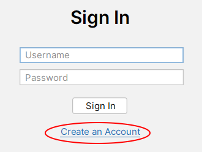
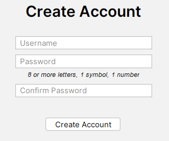

To get started, create an account by clicking on "Create an Account".
On the account creation screen, enter a username and a valid password; one with at least 8 letters, a number, and a symbol. Then, click "Create Account".
If successful, you'll be taken back to the login screen where you can log in to your new account.